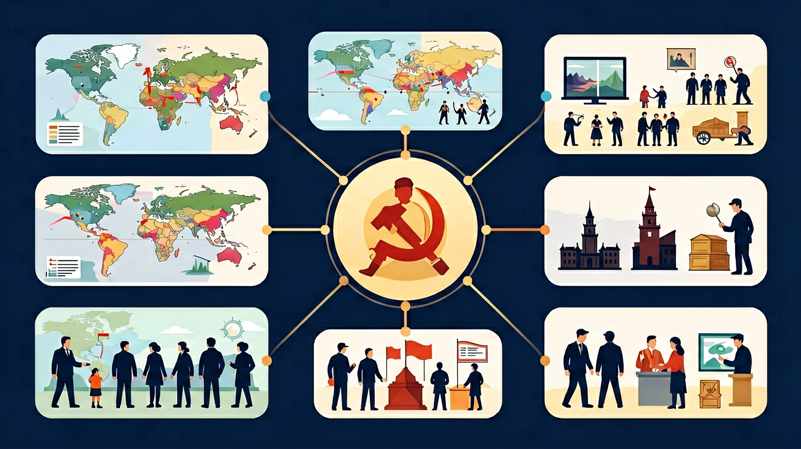
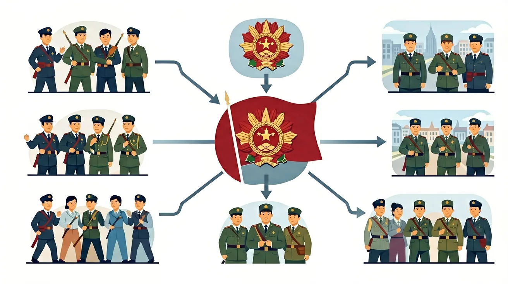

世界上第一次成功的社会主义革命——一声炮响，震动世界
在正式学习之前，先想一想你已经知道什么。以下问题没有对错之分，只是帮助我们了解你的学习起点。
你知道
能说出十月革命的时间（1917年11月7日）、地点（彼得格勒）及关键人物（列宁、托洛茨基） 能解释十月革命爆发的根本原因（沙俄危机、一战催化、临时政府软弱） 能比较二月革命与十月革命的异同，分析布尔什维克夺权成功的关键因素 能从多角度评价十月革命对20世纪世界历史格局的深远影响
本课包含8段语音讲解，覆盖从背景到意义的完整知识链。建议学习时开启语音跟读，效果更佳。
 20世纪初，沙皇俄国是一个相对落后的农业帝国，社会矛盾极为尖锐。第一次世界大战（1914—1918年）是压垮沙俄统治的最后一根稻草。 📌 历史解释
沙皇尼古拉二世统治下的俄国，有三重矛盾同时爆发：
封建专制矛盾（政治层面）、
劳资阶级矛盾（经济层面）、
一战民族存亡矛盾（军事层面）。
三重危机叠加，使革命成为历史必然。
1917年3月，首都彼得格勒爆发大规模工人罢工和街头示威。驻扎彼得格勒的士兵拒绝向示威群众开枪，转而倒戈支持革命。二月革命在短短数日内推翻了统治俄国长达303年的罗曼诺夫王朝。 罗曼诺夫王朝最后一位沙皇，二月革命中被迫退位。专制顽固，对民众疾苦漠然，最终被历史淘汰。 马克思主义理论家与革命领袖，从瑞士流亡归国后发表《四月提纲》，领导十月革命，成为苏联创建者。 十月革命的军事组织者，指挥赤卫队和革命士兵攻占冬宫，是起义成功的关键执行者。 1917年4月，列宁乘坐密封火车从瑞士穿越德国，回到彼得格勒芬兰车站。当晚他发表了震撼人心的演讲，次日形成《四月提纲》，提出将革命从民主革命推进到社会主义革命。 立即停战，退出帝国主义战争 没收地主土地，分配给农民 解决粮食危机，改善工农生活 推翻临时政府，建立苏维埃政权 1917年11月7日（俄历10月25日），布尔什维克党领导武装起义，工人赤卫队和革命士兵在一夜之间控制了彼得格勒的要害部门，最终攻占冬宫，推翻临时政府。 👆 点击上方时间轴的任意●节点，查看该历史事件的详细说明 革命军事委员会下达起义命令，赤卫队和革命士兵开始行动 革命军占领电话局、发电站、火车站、国家银行等战略要地 停泊在涅瓦河上的阿芙乐尔号巡洋舰发出空炮，发出攻打冬宫的信号 工人赤卫队和革命士兵攻入冬宫，临时政府阁员全部被捕 全俄苏维埃第二次代表大会宣告新政权建立，列宁当选人民委员会主席 十月革命胜利后，全俄苏维埃第二次代表大会立即颁布两项重要法令，兑现了布尔什维克党对工农群众的承诺，为新生苏维埃政权奠定了政治基础。 十月革命是20世纪最重要的历史事件之一。它不仅深刻改变了俄国的命运，更深刻影响了整个世界历史进程，开创了人类探索社会主义道路的新纪元。 建立第一个社会主义国家，打破了资本主义一统天下的局面，为被压迫民族和阶级树立了榜样。 推动了欧洲各国工人运动和共产党的成立，共产国际于1919年建立，全球社会主义运动蓬勃兴起。 苏俄宣布民族自决原则，鼓励亚非拉殖民地半殖民地人民争取民族独立，深刻影响了20世纪的民族解放运动。 十月革命"一声炮响，给中国送来了马克思列宁主义"。中国共产党的成立（1921年）与十月革命有着直接的思想渊源。
俄国十月革命的胜利，根源于沙俄的深重危机与一战的催化。布尔什维克党在列宁领导下，以"和平、土地、面包"赢得工农支持，抓住历史时机发动武装起义，推翻临时政府，建立了人类历史上第一个社会主义国家，开创了世界社会主义运动的新纪元，深刻影响了20世纪世界历史格局。
复制提示词到 AI 学伴，生成「俄国十月革命 初中历史 9年级」的时间轴或事件提纲；也可以上传你手绘的示意图，请 AI 学伴点评。 复制后可粘贴到 AI 学伴继续对话。 对比分析：二月革命与十月革命的本质区别是什么？请从革命性质、领导阶级、革命结果三个角度进行分析。 开放探究：为什么社会主义革命首先在俄国而不是在英、德等更发达的资本主义国家取得胜利？ 请结合本课所学，从至少两个角度说明你的分析（无标准答案，重在论证过程）。 迁移应用：解释为什么十月革命"给中国送来了马克思列宁主义"？这句话包含了哪两层含义？学习目标
语音导学模式
革命前夜——背景与条件
🏭 社会经济矛盾
⚔️ 一战催化危机
二月革命——推翻沙皇的前奏
✅ 二月革命的成果
❗ 临时政府的局限
尼古拉二世
列宁（弗拉基米尔·伊里奇·乌里扬诺夫）
托洛茨基
四月提纲——列宁的战略转向
《四月提纲》核心主张
十月革命——武装夺权全程
🖱️ 互动时间轴 — 点击查看各阶段详情
起义准备
占领要害
阿芙乐尔号炮击
攻占冬宫
苏维埃夺权
苏维埃政权——革命成果
📜 和平法令
🌾 土地法令
历史地图——沙俄版图与革命地理
切换到「1945年后」可对比苏联在二战后的版图变化。
教学动画——革命全程可视化
历史意义——改变世界的革命
打破资本主义格局
推动社会主义运动
民族解放运动
对中国革命的影响
随堂练习——自我检测
本节小结
🔗 革命因果链
💡 学习延伸
🎨 AI 多模态互动
达标检测
查看参考分析框架
查看参考要点
第二层（行动层面）：在苏俄影响下，中国共产党于1921年成立，开始用马克思列宁主义指导中国革命。
🗺️ 知识图谱：俄国十月革命 初中历史 9年级